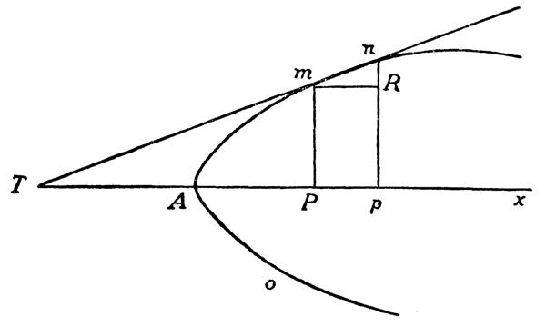

78.马克思致恩格斯
曼彻斯特
[1865年底―1866年初于伦敦]
附件
我上次在曼彻斯特的时候174你有一次曾经要我谈谈微分学。从下面这个例子中你可以完全弄清楚这个问题。全部微分学本来就是求任意一条曲线上的任何一点的切线。我想就用这个例子来给你说明问题的实质。

假设mAo是任意一条曲线，其性质（是不是抛物线、椭圆，等等）我们并不知道，在ｍ这个点上要求作它的一条切线。
Ａｘ是轴。我们对横座标Ax作一条垂直线mP（纵座标）。现在假设，n是曲线上无限地接近于ｍ的一个点。如果我对轴作一条垂直线np，那末ｐ就应该是无限地接近于Ｐ的一个点，而np就应该是无限地接近于mp的一条平行线。现在你再对np作一条无限小的垂直线mR。现在你如果假设横座标AP为ｘ，纵座标mP为ｙ，那末np＝mP（或Rp）加一段无限小的增量[nR]，或者[nR]＝dy（ｙ的微分），而mR＝（Pp）＝dx。既然切线的这一段mn是无限小的，所以它同曲线本身相应的部分是吻合的。因此我可以把ｍｎＲ看做是△（三角形），把△mnR和△mTP看做是相似三角形。所以：dy（＝nR）：dx（＝mR）＝y（＝mP）：PT（它对切线Tn说来是次切线）。所以次切线PT＝Уdx/dy。这就是所有的曲线的各个切点的一般的微分方程。如果我现在需要进一步解这个方程，并利用它来确定次切线ＰＴ的长度（如果后者已经有了，我只要用一条直线把Ｔ和ｍ这两个点连接起来，就可得出切线），那末我必须知道曲线的特性是什么。按照它的性质（例如抛物线、椭圆、蔓叶线等等），它有对于每个点的纵座标和横座标的确定的一般的方程，这种方程来自代数几何学。例如，如果曲线ｍＡｏ是一根抛物线，那末我就知道ｙ2（ｙ是每个任意一点的纵座标）＝ax，在这里ａ是抛物线的参数，而ｘ是相当于纵座标ｙ的横座标。
要是我把ｙ的这个数值代入方程PT＝y+(dx/dy)，那末我就应该首先找出dy，也就是说，求出ｙ的微分（这是当ｙ无限小地增长时附加于ｙ的部分）。如果y2＝ax，那末我根据微分学知道，d（y2）＝d（ax）（当然我应该求出方程两边的微分），结果是2ydy＝adx（d到处总是表示微分）。因此dx＝2ydy/a。如果我把dx的这个数值代入公式PT＝ydx/dy那末就得出PT＝2y2dy/adx＝2y2/a＝（因为y2＝ax）＝2ax/a＝2x。或者：抛物线的每一点m的次切线等于同一点的双倍的横座标。微分的量在运算中消失了。
注 释
174 1865年10月20日至11月初，马克思在曼彻斯特恩格斯处。——第155、168、487、490、494页。
189 以《附件》为标题的这个材料，大概是马克思在给恩格斯的一封信中附寄的。——第168页。